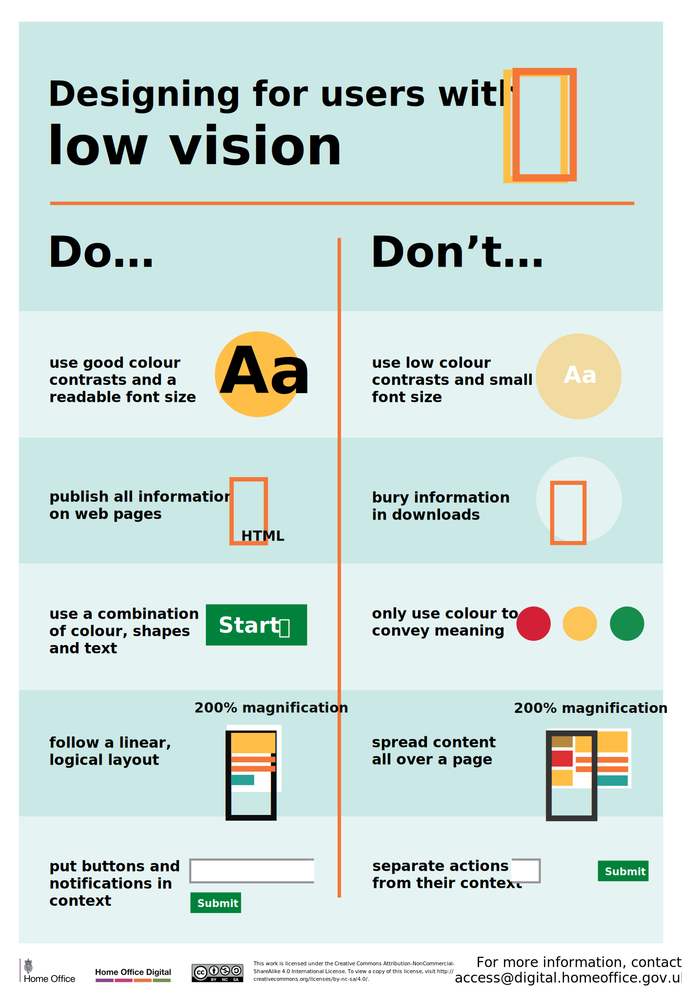
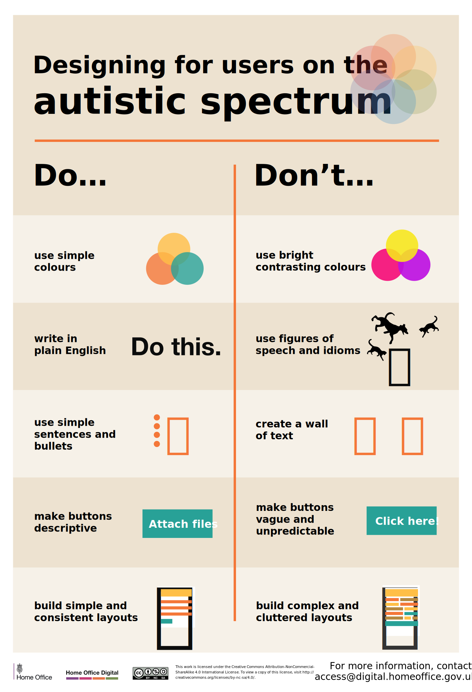
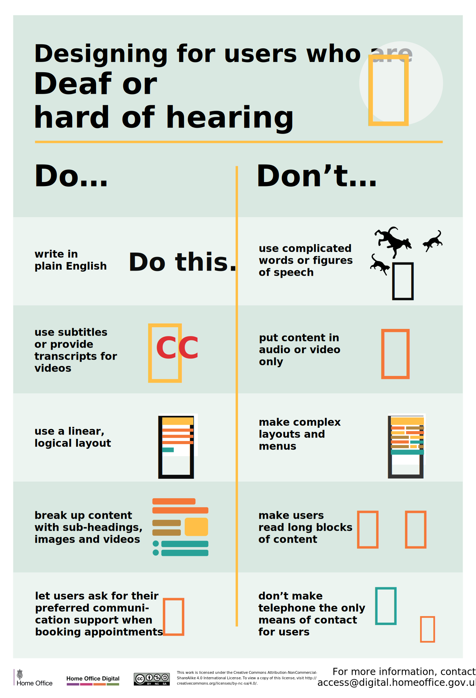
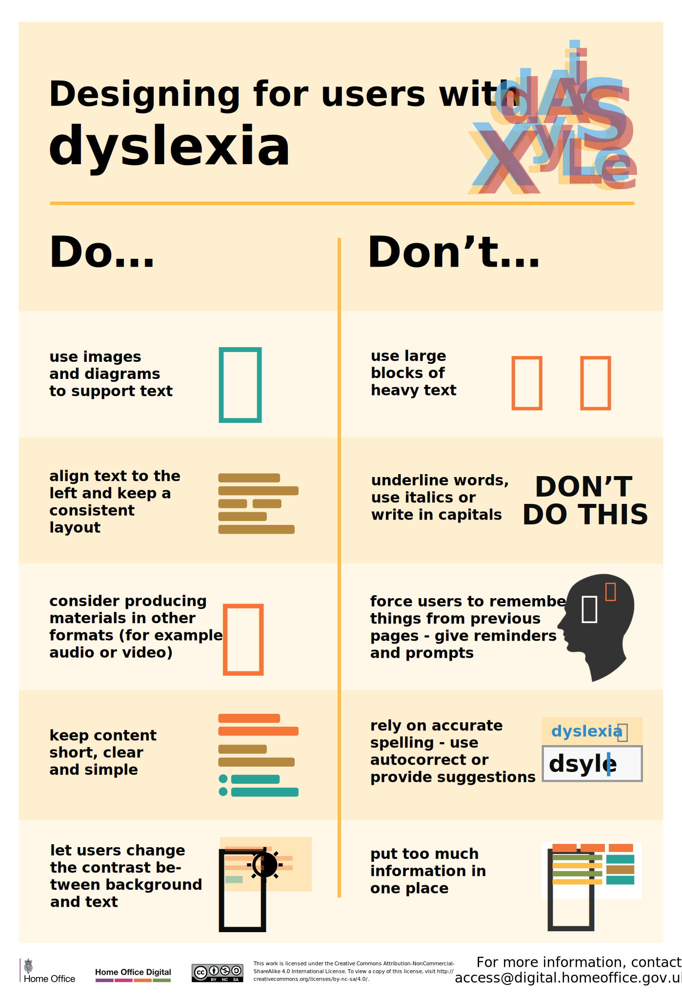
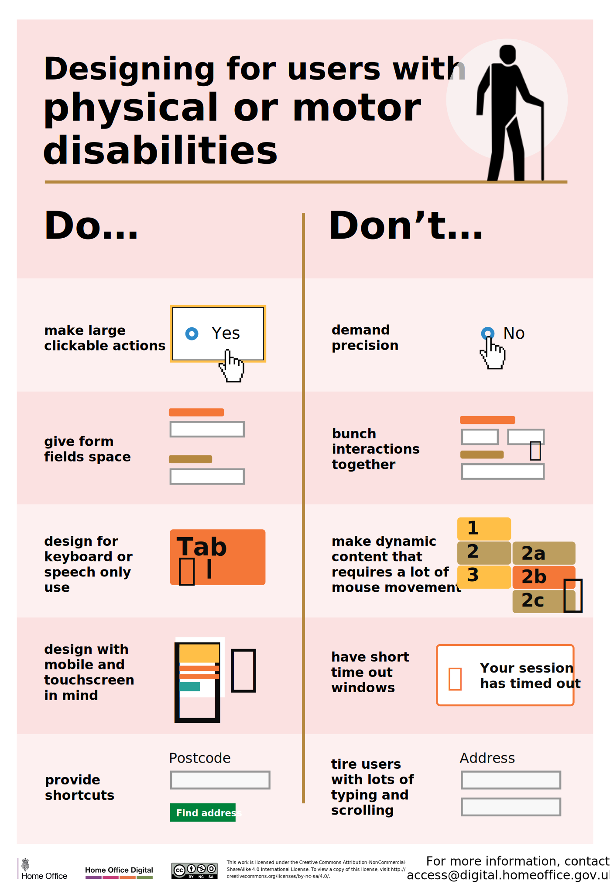
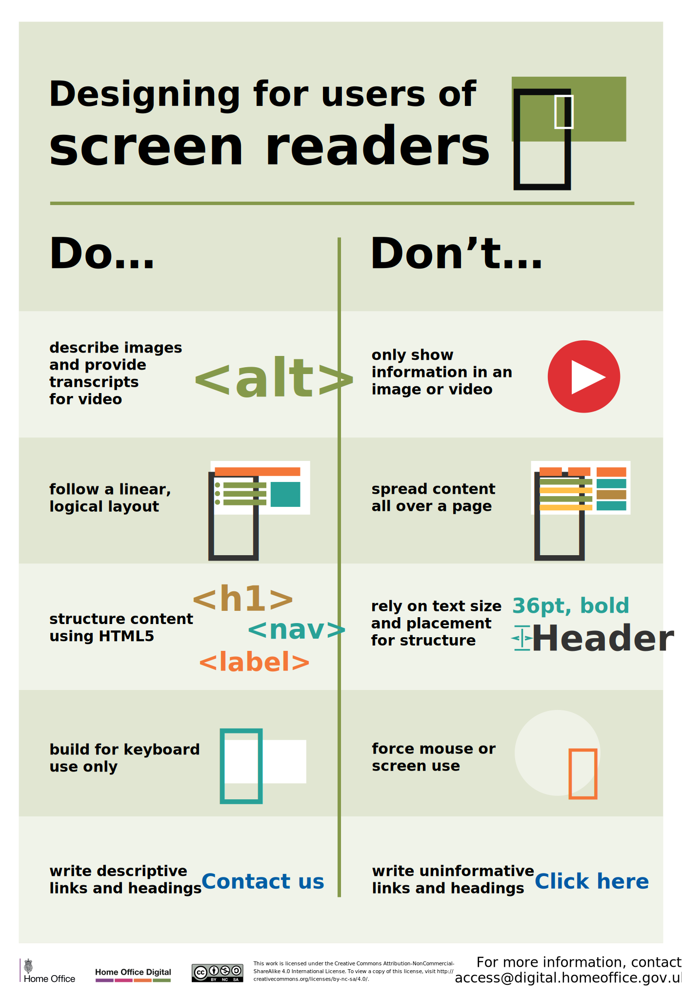

Designing for Accessibility
A collaborative Home Office digital project led by two Interaction Design Interns
Brief |
Create a website for accessibility guidance, based on the popular ‘Designing for Accessibility’ posters. |





